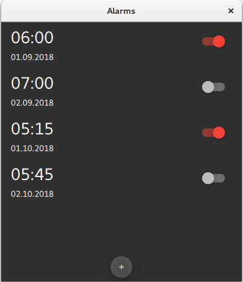
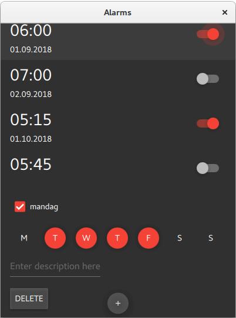
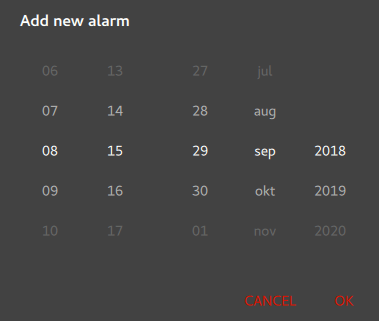
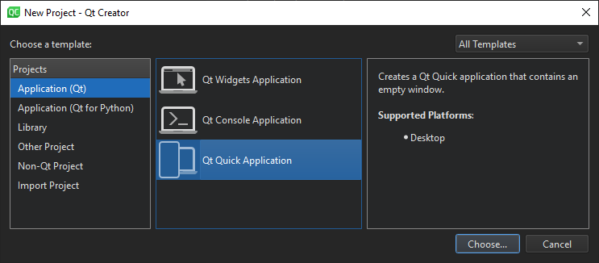
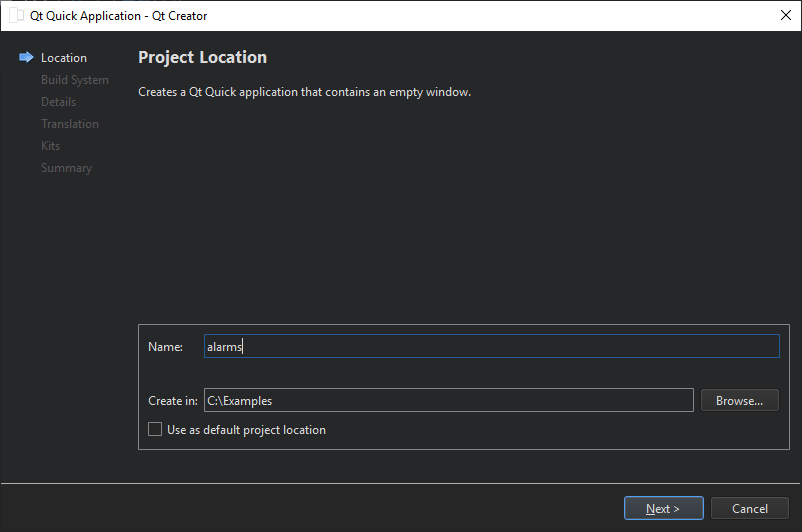

Getting Started Programming with Qt Quick
A tutorial for Qt Quick based on an alarms application.
This tutorial shows how to develop a simple alarm application as an introduction to Qt Quick and Qt Quick Controls.
This application is similar to the alarm application usually found on an Android phone. Its features let you enter, edit, or delete alarms. An alarm can trigger on a given date, and you can set it to repeat on a series of subsequent days.
The main screen shows the list of saved alarms:

The detail screen lets you edit or delete existing alarms:

The dialog screen is used for adding new alarms. It pops up when you click on the "+" RoundButton on the bottom of the main screen:

The source files are located in the qtdoc repository. You can either fetch the Qt sources from the Qt Project, or install them as part of Qt. The application is also available in the example list of Qt Creator's Welcome mode.
Creating the Alarms Project
This section shows how to create the project in Qt Creator. It discusses the files generated automatically by Qt Creator, and the two files the programmer has to create in Qt Creator or some other editor. The latter two files are included with the source code for this tutorial.
Note: The UI text in Qt Creator and the contents of the generated files depend on the Qt Creator version that you use.
Qt Creator
Setting up a new project in Qt Creator is aided by a wizard that guides you step-by-step through the project creation process. The wizard prompts you to enter the settings needed for that particular type of project and creates the project for you.
To create the Alarms project, select File > New Project > Application (Qt) > Qt Quick Application > Choose. Type alarms in the Name field, and follow the instructions of the wizard.


The Qt Quick application wizard creates a project that contains the following source files:
| Source file | Purpose |
|---|---|
| CMakeLists.txt | The project file |
| main.cpp | The main C++ code file for the application. |
| main.qml | The main QML code file for the application. We will instantiate our custom QML types (AlarmDialog, AlarmModel, AlarmDelegate, and TumblerDelegate) in this file. |
The wizard generates the code in the main.cpp file below. This code block enables High DPI scaling and declares app and engine. The engine then loads our main QML file.
int main(int argc, char *argv[]) { QGuiApplication app(argc, argv); QQmlApplicationEngine engine; const QUrl url(u"qrc:/alarms/main.qml"_s); QObject::connect(&engine, &QQmlApplicationEngine::objectCreated, &app, [url](QObject *obj, const QUrl &objUrl) { if (!obj && url == objUrl) QCoreApplication::exit(-1); },
Additional source files
| Source file | Purpose |
|---|---|
qtquickcontrols2.conf | Selects the Material style with the Dark theme. |
AlarmDialog.qml | Defines the dialog for adding new alarms. |
AlarmDelegate.qml | Defines the layout of the main screen of the app. |
AlarmModel.qml | Defines the ListModel used for storing the alarms' data. |
TumblerDelegate.qml | Defines the graphical layout of the Tumblers. |
qml.qrc | The resource file, which contains the names of the source files, except main.cpp and the project file. |
qtquickcontrols2.conf
The following snippet shows how to set the Dark theme in the Material style:
[Controls] Style=Material [Material] Theme=Dark Accent=Red
main.qml
mainWindow, an ApplicationWindow QML type, is the root item in this app.
ApplicationWindow { id: window width: 400 height: 500 visible: true
The ListView alarmListView combines the data from alarmModel with the layout defined in alarmDelegate.
ListView {
id: alarmListView
anchors.fill: parent
model: AlarmModel {}
delegate: AlarmDelegate {}
}
New alarms can be added by clicking RoundButton addAlarmButton. Clicking it opens a Dialog screen alarmDialog.
RoundButton {
id: addAlarmButton
text: "+"
anchors.bottom: alarmListView.bottom
anchors.bottomMargin: 8
anchors.horizontalCenter: parent.horizontalCenter
onClicked: alarmDialog.open()
}
AlarmDialog {
id: alarmDialog
x: Math.round((parent.width - width) / 2)
y: Math.round((parent.height - height) / 2)
alarmModel: alarmListView.model
}
AlarmDialog.qml
This dialog screen has a RowLayout with a Tumbler each for hours and minutes, and another RowLayout with a Tumbler each for day, month, and year.
contentItem: RowLayout {
RowLayout {
id: rowTumbler
Tumbler {
id: hoursTumbler
model: 24
delegate: TumblerDelegate {
text: formatNumber(modelData)
}
}
Tumbler {
id: minutesTumbler
model: 60
delegate: TumblerDelegate {
text: formatNumber(modelData)
}
}
}
RowLayout {
id: datePicker
Layout.leftMargin: 20
property alias dayTumbler: dayTumbler
property alias monthTumbler: monthTumbler
property alias yearTumbler: yearTumbler
readonly property var days: [31, 29, 31, 30, 31, 30, 31, 31, 30, 31, 30, 31]
Tumbler {
id: dayTumbler
function updateModel() {
// Populate the model with days of the month. For example: [0, ..., 30]
var previousIndex = dayTumbler.currentIndex
var array = []
var newDays = datePicker.days[monthTumbler.currentIndex]
for (var i = 1; i <= newDays; ++i)
array.push(i)
dayTumbler.model = array
dayTumbler.currentIndex = Math.min(newDays - 1, previousIndex)
}
Component.onCompleted: updateModel()
delegate: TumblerDelegate {
text: formatNumber(modelData)
}
}
Tumbler {
id: monthTumbler
onCurrentIndexChanged: dayTumbler.updateModel()
model: 12
delegate: TumblerDelegate {
text: window.locale.standaloneMonthName(modelData, Locale.ShortFormat)
}
}
Tumbler {
id: yearTumbler
// This array is populated with the next three years. For example: [2018, 2019, 2020]
readonly property var years: (function() {
var currentYear = new Date().getFullYear()
return [0, 1, 2].map(function(value) { return value + currentYear; })
})()
model: years
delegate: TumblerDelegate {
text: formatNumber(modelData)
}
}
}
}
}
If you click on OK in the dialog, the entered data will be added to alarmModel:
onAccepted: {
alarmModel.append({
"hour": hoursTumbler.currentIndex,
"minute": minutesTumbler.currentIndex,
"day": dayTumbler.currentIndex + 1,
"month": monthTumbler.currentIndex + 1,
"year": yearTumbler.years[yearTumbler.currentIndex],
"activated": true,
"label": "",
"repeat": false,
"daysToRepeat": [
{ "dayOfWeek": 0, "repeat": false },
{ "dayOfWeek": 1, "repeat": false },
{ "dayOfWeek": 2, "repeat": false },
{ "dayOfWeek": 3, "repeat": false },
{ "dayOfWeek": 4, "repeat": false },
{ "dayOfWeek": 5, "repeat": false },
{ "dayOfWeek": 6, "repeat": false }
],
})
}
onRejected: alarmDialog.close()
AlarmDelegate.qml
Each alarm in the main screen is an ItemDelegate. The ItemDelegate root contains all fields on the main screen and the detail screen. The detail screen's fields are only visible after an alarm has been clicked on, i.e. when root.checked is true.
ItemDelegate { id: root width: parent.width checkable: true onClicked: ListView.view.currentIndex = index contentItem: ColumnLayout { spacing: 0 RowLayout { ColumnLayout { id: dateColumn readonly property date alarmDate: new Date( model.year, model.month - 1, model.day, model.hour, model.minute) Label { id: timeLabel font.pixelSize: Qt.application.font.pixelSize * 2 text: dateColumn.alarmDate.toLocaleTimeString(window.locale, Locale.ShortFormat) } RowLayout { Label { id: dateLabel text: dateColumn.alarmDate.toLocaleDateString(window.locale, Locale.ShortFormat) } Label { id: alarmAbout text: "⸱ " + model.label visible: model.label.length > 0 && !root.checked } } } Item { Layout.fillWidth: true } Switch { checked: model.activated Layout.alignment: Qt.AlignTop onClicked: model.activated = checked } } CheckBox { id: alarmRepeat text: qsTr("Repeat") checked: model.repeat visible: root.checked onToggled: model.repeat = checked } Flow { visible: root.checked && model.repeat Layout.fillWidth: true Repeater { id: dayRepeater model: daysToRepeat delegate: RoundButton { text: Qt.locale().dayName(model.dayOfWeek, Locale.NarrowFormat) flat: true checked: model.repeat checkable: true Material.background: checked ? Material.accent : "transparent" onToggled: model.repeat = checked } } } TextField { id: alarmDescriptionTextField placeholderText: qsTr("Enter description here") cursorVisible: true visible: root.checked text: model.label onTextEdited: model.label = text } Button { id: deleteAlarmButton text: qsTr("Delete") width: 40 height: 40 visible: root.checked onClicked: root.ListView.view.model.remove(root.ListView.view.currentIndex, 1) } } }
AlarmModel.qml
This QML file contains the definition of alarmModel, the ListModel that manages the alarm data.
It creates five ListElements with example alarms.
import QtQuick // Populate the model with some sample data. ListModel { id: alarmModel ListElement { hour: 6 minute: 0 day: 2 month: 8 year: 2018 activated: true label: "Wake up" repeat: true daysToRepeat: [ ListElement { dayOfWeek: 0; repeat: false }, ListElement { dayOfWeek: 1; repeat: false }, ListElement { dayOfWeek: 2; repeat: false }, ListElement { dayOfWeek: 3; repeat: false }, ListElement { dayOfWeek: 4; repeat: false }, ListElement { dayOfWeek: 5; repeat: false }, ListElement { dayOfWeek: 6; repeat: false } ] } ListElement { hour: 6 minute: 0 day: 3 month: 8 year: 2018 activated: true label: "Wake up" repeat: true daysToRepeat: [ ListElement { dayOfWeek: 0; repeat: true }, ListElement { dayOfWeek: 1; repeat: true }, ListElement { dayOfWeek: 2; repeat: true }, ListElement { dayOfWeek: 3; repeat: true }, ListElement { dayOfWeek: 4; repeat: true }, ListElement { dayOfWeek: 5; repeat: false }, ListElement { dayOfWeek: 6; repeat: false } ] } ListElement { hour: 7 minute: 0 day: 3 month: 8 year: 2018 activated: false label: "Exercise" repeat: true daysToRepeat: [ ListElement { dayOfWeek: 0; repeat: true }, ListElement { dayOfWeek: 1; repeat: true }, ListElement { dayOfWeek: 2; repeat: true }, ListElement { dayOfWeek: 3; repeat: true }, ListElement { dayOfWeek: 4; repeat: true }, ListElement { dayOfWeek: 5; repeat: true }, ListElement { dayOfWeek: 6; repeat: true } ] } ListElement { hour: 5 minute: 15 day: 1 month: 9 year: 2018 activated: true label: "" repeat: false daysToRepeat: [ ListElement { dayOfWeek: 0; repeat: false }, ListElement { dayOfWeek: 1; repeat: false }, ListElement { dayOfWeek: 2; repeat: false }, ListElement { dayOfWeek: 3; repeat: false }, ListElement { dayOfWeek: 4; repeat: false }, ListElement { dayOfWeek: 5; repeat: false }, ListElement { dayOfWeek: 6; repeat: false } ] } ListElement { hour: 5 minute: 45 day: 3 month: 9 year: 2018 activated: false label: "" repeat: false daysToRepeat: [ ListElement { dayOfWeek: 0; repeat: false }, ListElement { dayOfWeek: 1; repeat: false }, ListElement { dayOfWeek: 2; repeat: false }, ListElement { dayOfWeek: 3; repeat: false }, ListElement { dayOfWeek: 4; repeat: false }, ListElement { dayOfWeek: 5; repeat: false }, ListElement { dayOfWeek: 6; repeat: false } ] } }
TumblerDelegate.qml
TumblerDelegate defines the graphical properties of the Tumblers.
import QtQuick import QtQuick.Controls import QtQuick.Controls.Material Text { text: modelData color: Tumbler.tumbler.Material.foreground font: Tumbler.tumbler.font opacity: 1.0 - Math.abs(Tumbler.displacement) / (Tumbler.tumbler.visibleItemCount / 2) horizontalAlignment: Text.AlignHCenter verticalAlignment: Text.AlignVCenter }
Entering new alarms
At the bottom of the startup screen, you can see a Button for adding alarms. Click it to open the Add new alarm dialog.
RoundButton {
id: addAlarmButton
text: "+"
anchors.bottom: alarmListView.bottom
anchors.bottomMargin: 8
anchors.horizontalCenter: parent.horizontalCenter
onClicked: alarmDialog.open()
}
The dialog for new alarms:
All fields are entered using Tumbler QML types. If you press OK, the values selected in the Tumblers are written to alarmModel.
contentItem: RowLayout {
RowLayout {
id: rowTumbler
Tumbler {
id: hoursTumbler
model: 24
delegate: TumblerDelegate {
text: formatNumber(modelData)
}
}
Tumbler {
id: minutesTumbler
model: 60
delegate: TumblerDelegate {
text: formatNumber(modelData)
}
}
}
RowLayout {
id: datePicker
Layout.leftMargin: 20
property alias dayTumbler: dayTumbler
property alias monthTumbler: monthTumbler
property alias yearTumbler: yearTumbler
readonly property var days: [31, 29, 31, 30, 31, 30, 31, 31, 30, 31, 30, 31]
Tumbler {
id: dayTumbler
function updateModel() {
// Populate the model with days of the month. For example: [0, ..., 30]
var previousIndex = dayTumbler.currentIndex
var array = []
var newDays = datePicker.days[monthTumbler.currentIndex]
for (var i = 1; i <= newDays; ++i)
array.push(i)
dayTumbler.model = array
dayTumbler.currentIndex = Math.min(newDays - 1, previousIndex)
}
Component.onCompleted: updateModel()
delegate: TumblerDelegate {
text: formatNumber(modelData)
}
}
Tumbler {
id: monthTumbler
onCurrentIndexChanged: dayTumbler.updateModel()
model: 12
delegate: TumblerDelegate {
text: window.locale.standaloneMonthName(modelData, Locale.ShortFormat)
}
}
Tumbler {
id: yearTumbler
// This array is populated with the next three years. For example: [2018, 2019, 2020]
readonly property var years: (function() {
var currentYear = new Date().getFullYear()
return [0, 1, 2].map(function(value) { return value + currentYear; })
})()
model: years
delegate: TumblerDelegate {
text: formatNumber(modelData)
}
}
}
}
}
Editing alarms
If you click on a particular alarm, you can edit it in the detail screen.
Clicking on an alarm sets root.checked to true, which makes visible the fields of the detail screen.
visible: root.checked
If you want the alarm to trigger also on other days, check alarmRepeat. The Repeater will display a checkable RoundButton for each day of the week.
Flow {
visible: root.checked && model.repeat
Layout.fillWidth: true
Repeater {
id: dayRepeater
model: daysToRepeat
delegate: RoundButton {
text: Qt.locale().dayName(model.dayOfWeek, Locale.NarrowFormat)
flat: true
checked: model.repeat
checkable: true
Material.background: checked ? Material.accent : "transparent"
onToggled: model.repeat = checked
}
}
}
If you modify the description of the alarm, it will be reflected in the main screen afterwards.
TextField {
id: alarmDescriptionTextField
placeholderText: qsTr("Enter description here")
cursorVisible: true
visible: root.checked
text: model.label
onTextEdited: model.label = text
}
Deleting alarms
The detail screen (see above) has a Button for deleting alarms. When onClicked is emitted, the current ListElement is deleted from alarmModel.
Button {
id: deleteAlarmButton
text: qsTr("Delete")
width: 40
height: 40
visible: root.checked
onClicked: root.ListView.view.model.remove(root.ListView.view.currentIndex, 1)
}
Summary
The app has no code for adding sound or vibration to the alarm, nor does it store the alarms in any format or database. Maybe it could be an interesting coding project to add those features. Storing the data could be done quickly and easily in JSON format.
See also JSON Support in Qt.